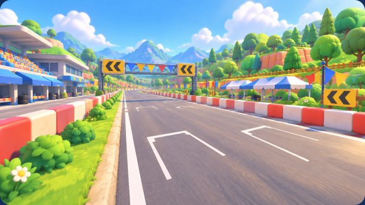
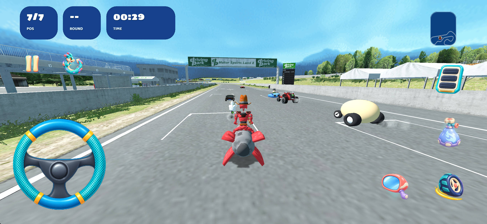
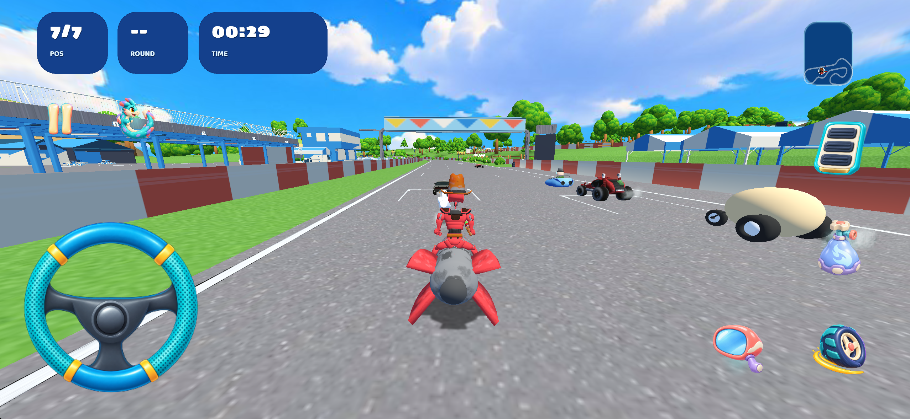
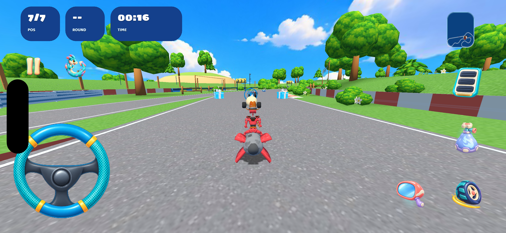
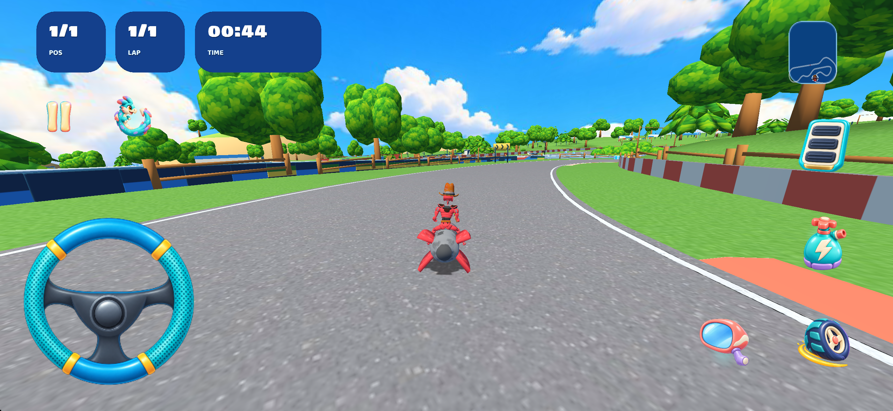

DP Motorsports Land II
Окружение стало плотнее: округлые деревья, кусты, цветы, травяные группы, деревянные ограждения, холмы и гирлянды флажков. 1841 размещение ссылается на 10 общих моделей в игровом пуле.
Итоговый Blender-проект · Проверка сохранности · Проверка ресурсов
Референс

| Элемент | Результат |
|---|---|
| Плотная зелень и мелкие детали | Округлые лиственные кроны, ели, кусты, ромашки и пучки травы. Единая текстура листвы хранится в приложении один раз. |
| Палатки, трибуны, коралловые бордюры | Существующие формы переоформлены тёплыми материалами и сине-белыми тентами. |
| Флажки и деревянные ограждения | Общие модели с размещением по координатам; стартовая арка без стрелок. |
| Указатели | 20 указателей: 13 правых и 7 левых. Направление рассчитано по исходной линии движения; лицевые стороны обращены к подъезжающему игроку. |
| Холмы и атмосфера | Тёплые холмы с зелёными вершинами и светлое небо. Архитектура и освещение проще иллюстрации: точное совпадение с референсом не заявляется. |
Технические проверки V2 пройдены. Визуальное согласование этой версии ещё не получено. Ранее отклонённая V1 сохранена вне итоговой папки.
До и после




Скриншоты собранного приложения


Вес и геометрия
| Измерение | Результат |
|---|---|
| Исходные ресурсы шестой карты | 26,27 МБ |
| Текущая папка карты | 19,56 МБ |
| Новые общие модели и материалы | 82,795 байт |
| Новая общая текстура листвы | 106,765 байт; одна копия в приложении |
| Карта плюс все её новые общие ресурсы | 19,75 МБ, уменьшение на 6,52 МБ |
| Треугольники с учётом каждого размещения | 306,965 → 358,857; +16.90%, в пределах ±20% |
| Приложение целиком на момент проверки | 294,53 МБ. Распакованная Debug-сборка iOS Simulator; это не размер IPA или скачивания из App Store. |
Сохранность и проверка
Геометрия полотна, бордюров, разметки и защищённого грунта, индексы и нормали сверены с исходником. Игровые точки, линии и XML маршрута сохранены. Физические свойства поверхностей остались исходными. Изменён и упрощён только декоративный набор.
Проверка всех 1841 размещений по исходной дороге не обнаружила перекрытий. Полный круг обычной гонки пройден до естественного финиша. Событие кампании «Следуй за лидером» отдельно запущено и снято в движении. Естественное завершение режима после выбывания подтверждено отдельным кадром. Все уровни сложности не проверены.
Итоговый Blender-файл повторно открыт: отсутствующих текстур — 0, все размещения совпадают с игровыми. Экспорт, ресурсы проекта, собранного и установленного приложения сверены по SHA-256. Проверена одна копия общей текстуры листвы.
Проверка выполнена в iOS Simulator. Производительность и изображение на физическом устройстве не измерялись. Превью карты заменено игровым кадром этой версии; превью кампании автоматически собрано из него.